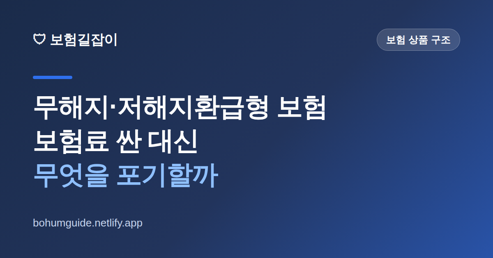

무해지·저해지환급형 보험, 보험료 싼 대신 무엇을 포기할까
"같은 보장인데 보험료가 훨씬 싸다"는 말에 가입했다가, 몇 년 뒤 사정이 생겨 해지하려는데 돌려받을 돈이 0원이라는 사실을 그제야 아는 경우가 많습니다. 무해지·저해지환급형은 잘 쓰면 알뜰하지만, 구조를 모르고 들면 손해가 큰 상품입니다. 핵심을 짚어 봅니다.

✍️ 편집자 참고: 본 글은 초안입니다. 환급금 구조·상품 명칭·판매 규정은 상품과 시기에 따라 다르고 개정되니, 게시 전 금융감독원·협회 최신 안내로 검수해 주세요.
보장성 보험을 알아보다 보면 같은 회사, 비슷한 보장인데 보험료 차이가 눈에 띄게 나는 상품을 만납니다. 그 차이의 배경에 자주 있는 것이 바로 무해지환급형·저해지환급형입니다. 이름은 낯설어도 원리는 단순합니다. "중간에 해지할 때 돌려주는 돈(해지환급금)을 없애거나 줄이는 대신, 매달 내는 보험료를 깎아 준" 구조입니다.
무해지·저해지환급형이란 무엇인가
일반적인 보장성 보험은 중도에 해지하면 그동안 쌓인 해지환급금을 일부 돌려줍니다. 반면 무해지환급형은 보험료 납입 기간 중에 해지하면 환급금이 아예 없거나 매우 적고, 저해지환급형은 일반형보다 환급금을 낮게 설계한 상품입니다. 대신 그만큼 매달 내는 보험료를 낮췄습니다.
핵심은 "환급을 포기하는 대가로 보험료를 할인받는다"는 교환 관계입니다. 그래서 끝까지 유지할 자신이 있다면 같은 보장을 더 싸게 확보하는 알뜰한 선택이 되지만, 중간에 해지할 가능성이 있다면 낸 돈을 거의 통째로 잃을 수 있는 위험한 선택이 됩니다. 보험료가 싸다는 사실만 보고 결정하면 안 되는 이유가 여기에 있습니다.
왜 보험료가 싼지, 숫자로 이해하기
구체적 금액은 상품마다 다르지만, 방향을 잡기 위한 예시로 이해해 보겠습니다. 아래는 개념을 설명하기 위한 가상의 예시이며 실제 상품 수치가 아닙니다.
| 구분 | 월 보험료(예시) | 납입 중 해지 시 환급 | 완납·유지 시 |
|---|---|---|---|
| 일반형 | 다소 높음 | 쌓인 만큼 일부 환급 | 약관에 따른 환급/만기금 |
| 저해지형 | 중간 | 일반형보다 적게 환급 | 납입 후 일반형 수준에 근접하기도 |
| 무해지형 | 낮음 | 거의 없음(0에 가까움) | 납입 후 환급이 생기는 구조도 있음 |
표에서 보듯 무해지형의 함정은 '납입 기간 중' 해지에 있습니다. 상품에 따라 보험료를 다 낸 뒤(완납 후)에는 환급금이 일반형 수준으로 회복되도록 설계된 경우도 있어, 완납까지 유지한다면 결과적으로 이득일 수 있습니다. 문제는 사람 일이 계획대로만 되지 않는다는 점입니다. 소득이 끊기거나 목돈이 급할 때 납입 기간 중에 해지하면, 저렴했던 보험료의 대가를 '환급금 0원'으로 치르게 됩니다.
가장 흔한 오해
"싸니까 일단 넣어두고 힘들면 해지하면 되지"는 무해지형에서 가장 위험한 생각입니다. 힘들어서 해지하는 바로 그 순간 돌려받을 돈이 없기 때문입니다. 무해지형은 '해지하지 않을 사람'에게 유리하도록 설계된 상품입니다.
나에게 맞을까? 판단 기준
무해지·저해지형이 유리한 사람과 피해야 할 사람은 비교적 뚜렷하게 갈립니다. 자신의 상황을 대입해 보세요.
맞을 수 있는 경우
- 정말 오래 유지할 보장(예: 장기 사망·질병 대비)이고 중도 해지 계획이 없다
- 납입 기간이 끝날 때까지 보험료를 감당할 소득이 안정적이다
- 같은 보장을 조금이라도 저렴하게 확보해 유지비를 아끼고 싶다
피하는 편이 나은 경우
- 소득이 불규칙해 중간에 해지할 가능성이 있다
- 몇 년 뒤 더 나은 상품으로 갈아탈 생각이 있다(중도 해지 시 손실이 큼)
- 보험을 저축·목돈 용도로 생각한다(무해지형은 저축과 성격이 다름)
특히 저축이 목적이라면 방향을 다시 잡아야 합니다. 무해지형은 '보장을 싸게 사는' 상품이지 '돈을 모으는' 상품이 아닙니다. 보험을 왜 드는지부터 정리하고 싶다면 보험 리모델링, 무작정 갈아타면 안 되는 이유를, 갱신·비갱신처럼 보험료 구조가 유지에 미치는 영향은 갱신형 vs 비갱신형 글을 함께 보면 판단이 쉬워집니다.
가입 전 반드시 확인할 것 & 요약
무해지·저해지형을 권유받았다면, 보험료가 싸다는 말에 바로 서명하지 말고 다음을 확인하세요. 첫째, 이 상품이 무해지형인지 저해지형인지, 그리고 납입 중 해지 시 환급금이 얼마인지를 설계서에서 직접 확인합니다. 둘째, 완납 후 환급금이 어떻게 되는지(회복 여부)를 묻습니다. 셋째, 내가 납입 기간 내내 유지할 수 있는지를 냉정하게 따집니다.
- 보험료가 싼 이유는 중도 해지 환급을 포기했기 때문임을 이해
- 납입 중 해지 시 환급금이 0에 가까울 수 있다는 점을 설계서로 확인
- 완납까지 유지 가능한 사람에게 유리, 해지 가능성 있으면 부적합
- 저축 목적이라면 무해지형은 대안이 아니다
참고할 수 있는 공신력 있는 자료
- 금융감독원 — 보험 상품 구조·소비자 유의사항 안내
- 파인(금융소비자 정보포털) — 내 보험 조회·상품 비교
- 생명보험협회 — 생명보험 상품·공시 정보
본 정보는 일반적인 안내이며, 환급금 구조와 보장 내용은 각 보험사 약관과 설계서, 금융감독원 등 관계기관을 통해 반드시 확인하시기 바랍니다.